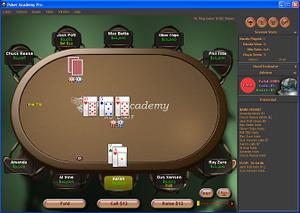

The table window is where you play poker against computer opponents or other people online. The game area displays the current table. Seats and cards may be clicked on for context-sensitive options. When it is your turn to act, action buttons are displayed along the bottom of the screen. Along the right of the table is an information Sidebar providing a game transcript, advice, and live hand statistics.
Deal HandThe Deal Hand button will only appear when you can start dealing a hand and pressing it starts the hand. When you are playing a ring game or a tournament game you can use the Auto Deal feature to automatically deal hands for you so that you do not have to click this button every hand (see options).
Fold
Clicking the Fold button folds your hand. This button appears when it is your turn to make an action and goes away when it is not your turn to act.
Check or Call $x
When it is your turn to act, if there is no bet to you the 'Check' button will appear, which allows you to check (i.e. call $0). If there is a bet to you the 'Call $x' button will appear, where $x is the amount of the bet to you. Pressing it will call the current bet.
Bet $x or Raise $x
When it is your turn to act, if there is no bet to you the 'Bet $x' button will appear, which allows you to bet $x dollars. If there is a bet to you, and the maximum number of raises has not been met, the 'Raise $x' button will appear. Pressing it will raise the current bet by $x dollars.
If the game is no-limit then a slider will also appear next to the Bet or Raise button, allowing any legal raise amount to be made. A Pot button will automatically bet the size of the pot for you, and an All-In button will automatically raise you all-in. If you wish to set a specific amount using the keyboard, click the $ button to the right of the slider.
If you click on a player's seat, you can set the bankroll for
that player and, if it is a computer player, modify the settings of that
player's poker engine.
You can click on a player's cards to reveal what they
are holding if you have "peeking" enabled (see options).